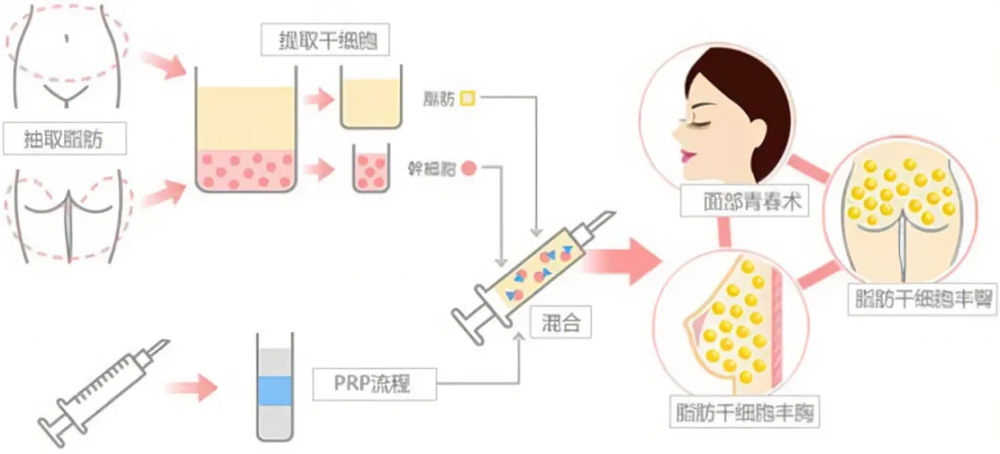
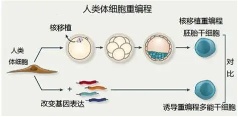
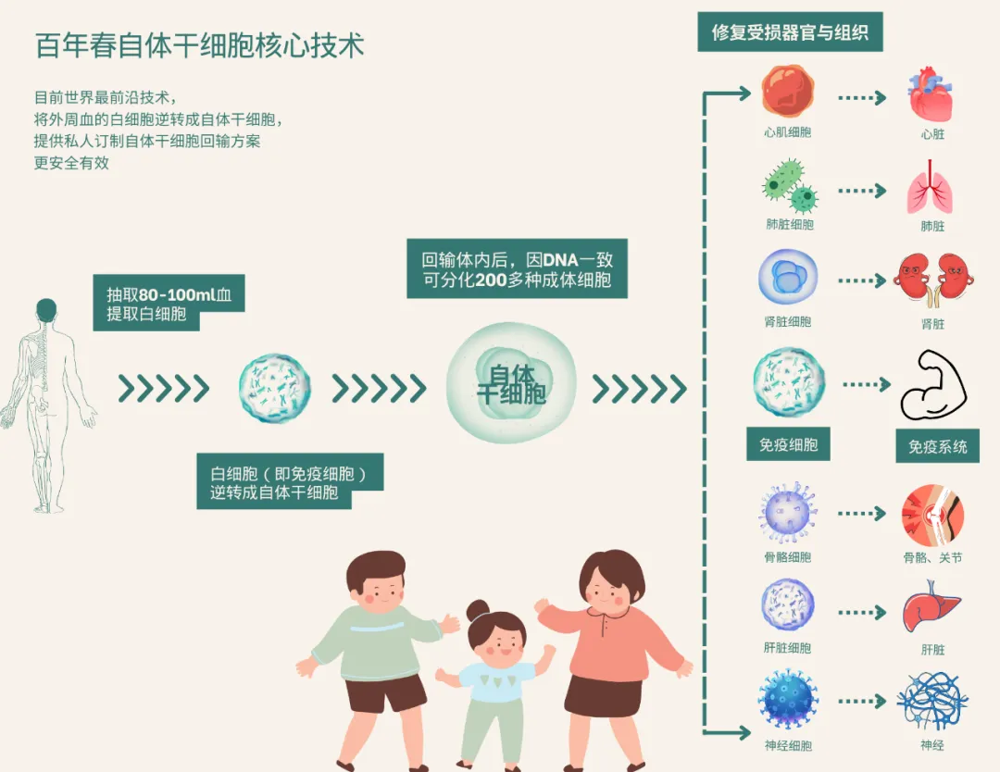
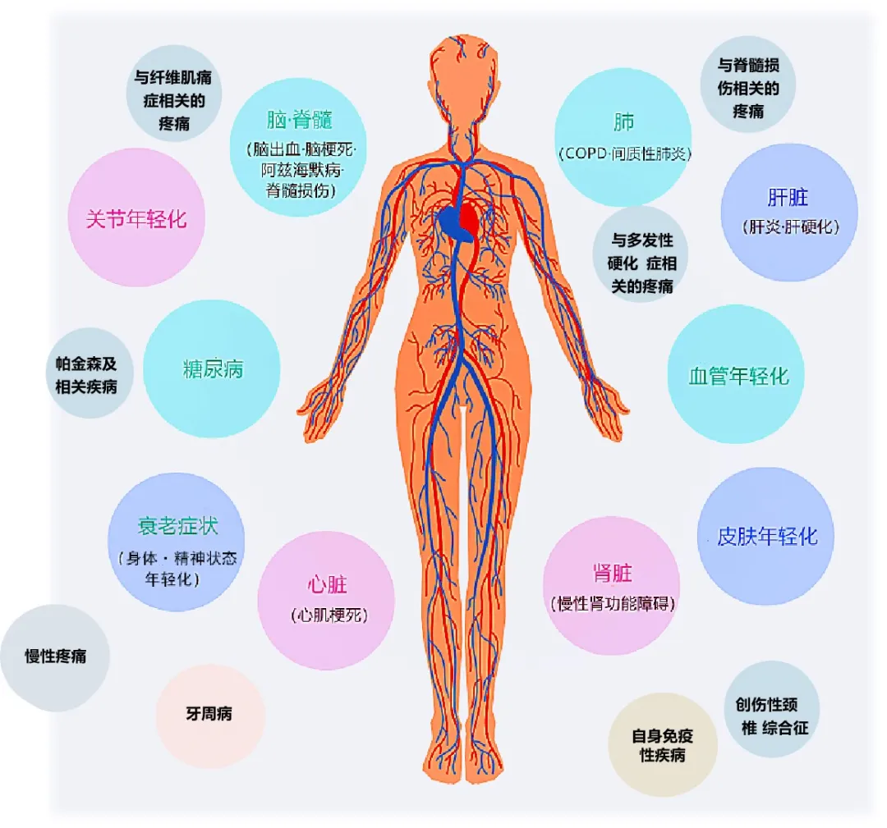
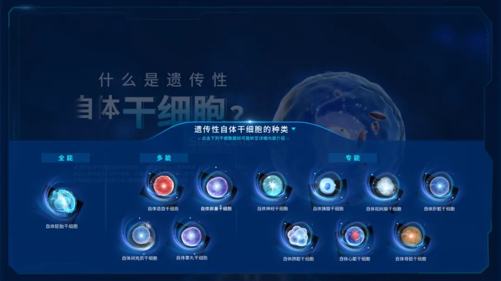

年后肝"负重"？百年春护肝美颜能量抗衰老针——给肝"松绑"，让脸发光！
2026-03-01

About Us
关于百年春
在这个日新月异的科技时代，医疗领域正经历着前所未有的变革。从基因编辑到细胞疗法，每一项技术的突破都在为人类的健康福祉开辟新的可能。
今天，我们要带您走进一个令人振奋的领域——白细胞小分子逆转自体干细胞技术，这是由百年春所引领的一场医疗革命。。
打破传统，重塑细胞命运
自体干细胞的技术原理与过程
01
第一代自体干细胞技术：传统提取扩增技术的干细胞

02
第二代自体干细胞技术：IPS细胞（人造的万能干细胞）

03
第三代自体干细胞技术：小分子诱导的自体干细胞技术（百年春自体干细胞技术）

自体干细胞技术的差异化
一、安全性
百年春小分子诱导技术：
①由于不涉及基因编辑，避免了转基因可能带来的遗传风险，如插入突变和转基因重新激活和致癌风险等；
②该技术利用患者自身的细胞进行诱导，因此不存在免疫排斥的风险；
③因不再进行扩增，保留了干细胞的分化能力，不会造成细胞缩小变异等反应。
传统提取干细胞方式：
①直接从患者体内提取干细胞，虽然也具有较高的安全性，但可能受到提取过程中损伤和污染的影响。
②因患者本身可获取的干细胞数量不多，经过多次分化的过程，干细胞在逐步老化衰退，易造成细胞缩小。
传统iPS技术：
①虽然iPS细胞具有广泛的分化潜能和无限的增殖能力，但传统的iPS诱导方法涉及基因操作，存在病毒基因组整合引起的插入突变和转基因重新激活的风险。此外，iPS细胞在分化过程中也可能出现遗传不稳定性和致瘤性等问题。
二、效率与稳定性
百年春小分子逆转技术：利用小分子化合物进行诱导，操作相对简单且易于标准化。同时，该技术具有较高的诱导效率和稳定性，能够在短时间内获得大量高质量的自体干细胞。
传统提取干细胞方式：提取过程相对复杂且耗时较长，且受到患者年龄、健康状况和提取部位等因素的影响，干细胞的数量和质量可能存在较大差异。
传统iPS技术：诱导过程复杂且耗时较长，且存在诱导效率低和稳定性差的问题。此外，iPS细胞的分化潜能和稳定性也需要进一步验证和优化。

百年春精准化医疗保健
